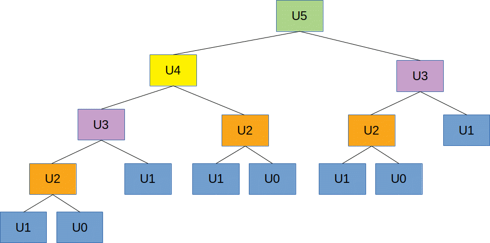
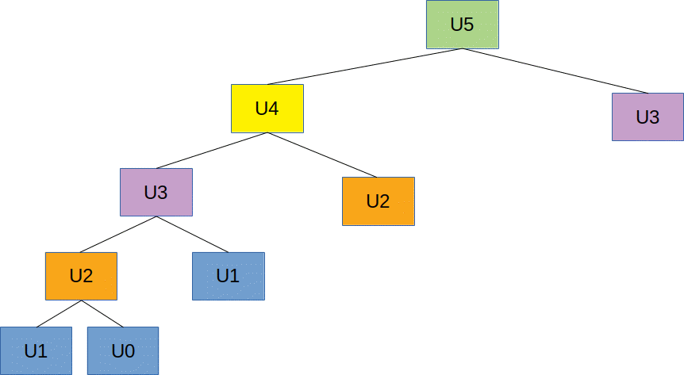

Algorithmes gloutons
I. Définition, principes, cas d'utilisation
A. Définition
Un algorithme glouton est un algorithme d'optimisation qui procède étape par étape en effectuant à chaque étape un choix optimal localement.
B. Cas d'utilisation et particularité
Dans certains cas, un algorithme glouton converge vers un extremum global, mais ce n'est pas toujours le cas. Par contre, ce sont des algorithmes en général assez "rapides". Il est donc important, avant d'utiliser ce type d'algorithme, de se poser les questions suivantes :
- Mon problème présente-t-il des extrema locaux ?
- Ai-je besoin d'un extremum global ?
- Mon problème est-il "compliqué" ?
II. Exemple du rendu de monnaie
A. Énoncé
Écrire un programme implantant un algorithme qui décrit comment rendre la monnaie en utilisant un minimum de pièces et billets.
B. Exemple
On doit rendre 288€, sachant que l'on dispose de pièces et de billets ayant les valeurs suivantes : [1, 2, 5, 10, 20, 50].
C. Optimalité
Avec un tel système de pièces, l'algorithme glouton est optimal. Mais ça n'est pas toujours le cas.
Exemple : On doit rendre 6€ avec les pièces [1, 3, 4]. L'algorithme glouton donne [4, 1, 1] alors que la solution optimale est [3, 3].
Exercice 1 : fournir une implantation de l'algorithme du rendu de monnaie
#données du problème
pieces = [1, 2, 5, 10, 20, 50];
somme = 288
#initialisation
decomposition = []
reste = somme
#fonction utilitaire
def chercherPieceMax(pieces, valeur):
retour = 1
for indice in range(len(pieces)-1,-1,-1):
if pieces[indice] <= valeur:
retour = pieces[indice]
break
return retour
#algorithme principal
while (reste > 0):
pieceMax = chercherPieceMax(pieces, reste)
decomposition.append(pieceMax)
reste = reste - pieceMax
#affichage du résultat
print("Une décomposition possible de ", somme, " en pièces est ", decomposition)
class Monnaie: def __init__(self, pieces=[1]): self.pieces = pieces self.pieces.sort() self.pieces.reverse() #fonction utilitaire def chercherPieceMax(self, valeur): retour = 1 for indice in range(0,len(self.pieces)): if self.pieces[indice] <= valeur: retour = self.pieces[indice] break return retour def decomposer(self, somme): #initialisation decomposition = [] reste = somme while (reste > 0): pieceMax = self.chercherPieceMax(reste) decomposition.append(pieceMax) reste = reste - pieceMax return decomposition #test somme = 288; monnaie = Monnaie([1,2,50,10,20,5]) decomposition = monnaie.decomposer(somme) print("Une décomposition possible de ", somme, " en pièces est ", decomposition)
D. Activités pédagogiques autour du problème du rendu de monnaie
Le problème du rendu de monnaie peut servir de base pour plusieurs points du programme :
- L'écriture d'un algorithme
- La démarche descendante
- Le passage d'un algorithme à un programme
- Le typage
- La terminaison
- La complexité
Cela est rapidement évoqué ici.
III. Le problème du sac à dos
A. Énoncé
On souhaite remplir "au mieux" un sac à dos. Pour ce faire, on dispose :
- D'une liste d'objets que l'on souhaite prendre. Chaque objet est caractérisé par un poids, un volume et une "utilité" ;
- Du volume du sac à dos ;
- Du poids maximal que l'on peut porter.
Remplir le sac "au mieux" signifie que la somme des utilités des objets que l'on va mettre dans le sac en respectant les contraintes de poids et de volume doit être maximale.
B. Solution gloutonne
Algorithme :
listeObjets = tousLesObjets
volumeDisponible = volumeSac
poidsDisponible = poidsMax
tant que listeObjets != {}:
Si l'objet obj le plus utile restant convient :
rajouter Obj au sac
mettreAJourContraintes
Sinon:
"jeter" Obj
Exercice 2 : implanter l'algorithme glouton permettant de résoudre le problème du sac à dos.
Tester votre programme avec les données suivantes :
- Volume du sac : 200
- Poids maximal : 4000
- Liste d'objets (nom, poids, volume, utilité):
- ("lampe", 250, 15, 4)
- ("couteau", 80, 0.5, 5)
- ("réchaud", 780, 60, 2)
- ("trousse de secours", 380, 70, 5)
- ("saucisson", 500, 20, 4)
- ("gourde", 1050, 110, 5)
- ("poncho", 240, 50, 3)
- ("téléphone", 300, 8, 1)
- ("boussole", 30, 2, 4)
- ("en-cas", 100, 5, 2)
- ("livre", 350, 20, 1)
class Ustensile:
def __init__(self, nom, poids, volume, utilite):
self.nom = nom
self.poids = poids
self.volume = volume
self.utilite = utilite
def __repr__(self):
return self.nom + "(" + str(self.poids) + "," + str(self.volume) + "," + str(self.utilite) + ")"
class SacADos:
def __init__(self, contenance):
self.contenance = contenance
self.contenu = []
def ajouterUstensile(self, ustensile):
self.contenu.append(ustensile)
def __repr__(self):
return repr(self.contenu)
def utilite(self):
utiliteTotale = 0
for ustensile in self.contenu:
utiliteTotale += ustensile.utilite
return utiliteTotale
def copieSac(source):
nouveau = SacADos(source.contenance)
nouveau.contenu = source.contenu[:]
return nouveau
class Porteur:
def __init__(self, nom, portabilite):
self.nom = nom
self.portabilite = portabilite
# poids en grammes, volume en cl
# utilite de 1 à 5
lampe = Ustensile("lampe", 250, 15, 4)
couteau = Ustensile("couteau", 80, 0.5, 5)
rechaud = Ustensile("réchaud", 780, 60, 2)
trousseSecours = Ustensile("trousse de secours", 380, 70, 5)
saucisson = Ustensile("saucisson", 500, 20, 4)
gourde = Ustensile("gourde", 1050, 110, 5)
poncho = Ustensile("poncho", 240, 50, 3)
telephone = Ustensile("téléphone", 300, 8, 1)
boussole = Ustensile("boussole", 30, 2, 4)
encas = Ustensile("en-cas", 100, 5, 2)
livre = Ustensile("livre", 350, 20, 1)
etagere = [lampe, couteau, rechaud, trousseSecours, saucisson, gourde, poncho, telephone, boussole, encas, livre]
#on trie par utilité décroissante
etagereTriee = sorted(etagere, key = lambda ustensile: -ustensile.utilite)
print(etagereTriee)
sac = SacADos(200)
porteur = Porteur("Bruno", 4000)
def remplirSacGlouton(etagere, sac, porteur):
volumeDisponible = sac.contenance
poidsDisponible = porteur.portabilite
for ustensile in etagere:
volumeConvenable = ustensile.volume <= volumeDisponible
poidsConvenable = ustensile.poids <= poidsDisponible
ustensilePrenable = volumeConvenable and poidsConvenable
if (ustensilePrenable):
sac.ajouterUstensile(ustensile)
volumeDisponible = volumeDisponible - ustensile.volume
poidsDisponible = poidsDisponible - ustensile.poids
return sac
remplirSacGlouton(etagereTriee, sac, porteur)
print(sac)
print(sac.utilite())
C. Solution récursive naïve optimale
Algorithme :
composerSac(sac, volumeDisponible, poidsDisponible, listeObjets):
si premierObjetConvient:
(utiliteAvec, sacAvec) = composerSac(sac+premierObjet, nouveauVolumeDispo,
nouveauPoidsDispo, listeObjets-premierObjet)
(utiliteSans, sacSans) = composerSac(sac, volumeDisponible,
poidsDisponible, listeObjets-premierObjet)
si utiliteAvec > utiliteSans:
return (utiliteAvec, sacAvec)
sinon:
return (utiliteSans, sacSans)
sinon:
return composerSac(sac, volumeDisponible,
poidsDisponible, listeObjets-premierObjet)
Exercice 3 : implanter l'algorithme et le tester sur les mêmes données que l'algorithme glouton.
class Ustensile: def __init__(self, nom, poids, volume, utilite): self.nom = nom self.poids = poids self.volume = volume self.utilite = utilite def __repr__(self): return self.nom + "(" + str(self.poids) + "," + str(self.volume) + "," + str(self.utilite) + ")" class SacADos: def __init__(self, contenance): self.contenance = contenance self.contenu = [] def ajouterUstensile(self, ustensile): self.contenu.append(ustensile) def __repr__(self): return repr(self.contenu) def utilite(self): utiliteTotale = 0 for ustensile in self.contenu: utiliteTotale += ustensile.utilite return utiliteTotale def copieSac(source): nouveau = SacADos(source.contenance) nouveau.contenu = source.contenu[:] return nouveau class Porteur: def __init__(self, nom, portabilite): self.nom = nom self.portabilite = portabilite # poids en grammes, volume en cl # utilite de 1 à 5 lampe = Ustensile("lampe", 250, 15, 4) couteau = Ustensile("couteau", 80, 0.5, 5) rechaud = Ustensile("réchaud", 780, 60, 2) trousseSecours = Ustensile("trousse de secours", 380, 70, 5) saucisson = Ustensile("saucisson", 500, 20, 4) gourde = Ustensile("gourde", 1050, 110, 5) poncho = Ustensile("poncho", 240, 50, 3) telephone = Ustensile("téléphone", 300, 8, 1) boussole = Ustensile("boussole", 30, 2, 4) encas = Ustensile("en-cas", 100, 5, 2) livre = Ustensile("livre", 350, 20, 1) etagere = [lampe, couteau, rechaud, trousseSecours, saucisson, gourde, poncho, telephone, boussole, encas, livre] #on trie par utilité décroissante etagereTriee = sorted(etagere, key = lambda ustensile: -ustensile.utilite) print(etagereTriee) def remplirSacOptimum(etagereSource, sac, porteur, volumeDisponible, poidsDisponible): etagere = etagereSource[:] # Si l'étagère est vide, on a fini if len(etagere) == 0: return sac # Sinon, on considère le premier élément ustensile = etagere.pop(0) #Peut-on le prendre ? volumeConvenable = ustensile.volume <= volumeDisponible poidsConvenable = ustensile.poids <= poidsDisponible ustensilePrenable = volumeConvenable and poidsConvenable #Si oui, on retourne le meilleur des 2 cas if ustensilePrenable: sacAvec = copieSac(sac) sacAvec.ajouterUstensile(ustensile) sacAvec = remplirSacOptimum(etagere, sacAvec, porteur, volumeDisponible-ustensile.volume, poidsDisponible-ustensile.poids) sacSans = copieSac(sac) sacSans = remplirSacOptimum(etagere, sacSans, porteur, volumeDisponible, poidsDisponible) if sacAvec.utilite() > sacSans.utilite(): return sacAvec else: return sacSans #Si non, on ne le prend pas et on considère la suite else: return remplirSacOptimum(etagere, sac, porteur, volumeDisponible, poidsDisponible) sac = SacADos(200) porteur = Porteur("Bruno", 4000) sac = remplirSacOptimum(etagereTriee, sac, porteur, sac.contenance, porteur.portabilite) print(sac) print(sac.utilite())
D. Un petit détour par Fibonacci
1. Rappel sur la suite de Fibonacci
La suite de Fibonacci est une suite définie récursivement ainsi :
- U0 = U1 = 1
- Un = Un-1+Un-2 ∀ n ≥ 2
2. Implantation simple
Une implantation simple du calcul d'un terme de la suite de Fibonacci est la suivante :
from sys import argv
def fiboNaif(n):
if n < 0:
raise "Nombre négatif"
elif (n == 0 or n == 1):
return 1
else:
return fiboNaif(n-1)+fiboNaif(n-2)
print(fiboNaif(int(argv[1])))
3. Analyse
Essayez de calculer les termes de la suite de Fibonacci pour n = 30, 31, ..., 40.
Exercice 4 : Faire le schéma de l'évaluation de U5.

Comme on peut le constater, la méthode de calcul est très peu efficace car elle amène à calculer plusieurs fois la même chose.
4. Mémoïsation
On appelle mémoïsation le fait de mémoriser, une valeur calculée lors de l'exécution d'un programme pour pouvoir réutiliser directement ce résultat s'il est nécessaire plus tard durant l'exécution du programme.
Exercice 5 : Faire le schéma de l'évaluation de U5 par un algorithme récursif mettant en oeuvre la mémoïsation

Exercice 6 : Donner une implantation d'un algorithme récursif de calcul des termes de la suite de Fibonacci avec mémoïsation
listeFibo = [1,1] def fiboEfficace(n): if n < 0: raise "Nombre négatif" elif n >= len(listeFibo): listeFibo.append(fiboEfficace(n-1)+ fiboEfficace(n-2)) return listeFibo[n] print(fiboEfficace(int(argv[1])))
E. Algorithme du sac à dos avec mémoïsation
Dans l'algorithme du sac à dos récursif, la fonction récursive va être appelée plusieurs fois avec les mêmes paramètres, c'est à dire avec le même triplet (poids restant, volume restant, objets restant). Pour gagner en efficacité, il suffit, lors d'un appel à la fonction, de vérifier si elle a déjà été appelée avec les mêmes paramètres. Si c'est le cas, on récupère la valeur déjà calculée. Sinon, on calcule la valeur, puis on l'associe, dans une table de hashage (un "dictionnaire") au triplet (poids, volume, objets). Cependant, en Python, les dictionnaires ne sont pas utilisables directement car on ne peut utiliser comme clé des dictionnaires Python des données contenant des listes. Il faut donc calculer un code de hashage pour représenter la liste des objets restant.
Exercice 7 : Donner une implantation de résolution du problème du sac à dos en utilisant la mémoïsation.
IV. Plus court chemin dans un graphe/labyrinthe
A. Problème
Trouver le plus court chemin d'un point de départ dans un labyrinthe vers la sortie, sachant qu'on dispose du plan du labyrinthe.
B. Principe général de l'algorithme
Lorsqu'on est sur une case, on évalue la distance de chacune des cases voisines à la sortie. Il ne reste plus qu'à se diriger vers la case voisine la plus proche de la sortie.
C. Mise en oeuvre de la mémoïsation
Quand on a évalué une case, on stocke la valeur trouvée dans la case.
D. Différentes variantes
On peut procéder en "profondeur d'abord" ou en "largeur d'abord". La première façon présente 2 inconvénients : d'une part, on risque de boucler indéfiniment, d'autre part il faudra éventuellement remettre en cause des calculs déjà effectués si on trouve un chemin plus court.
Exercice 8 : Donner une implantation d'un algorithme permettant de trouver le plus court chemin pour sortir d'un labyrinthe.